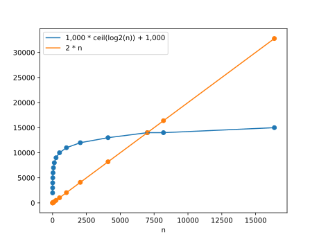

If you haven't read the Binary Search notes, read those first.
Here's the problem we're going to solve with big-O: We want some way to describe how fast an algorithm is for large inputs and we want it to be...
When we looked at Linear Search, we saw that when there were n words in our input list, we might have to search through all n words one at a time. In the best case scenario, the word we're looking for is right at the beginning of the list but in the worst case scenario, the word we're looking for is all the way at the end or not in the list at all so we have to loop n times.
bool contains_word_linear(const vector<string>& words, const string& word) {
// In the worse case, this loop runs n == words.size() times.
// Inside the loop, the only thing that happens is this comparison.
// If comparing takes constant time, then this algorithm takes
// "on the order of n" steps to run. It's O(n)
for (const auto& w : words) {
if (w == word) {
return true;
}
}
return false;
}
When we looked at Binary Search, we saw that when there were n words in our input list, we might have to eliminate half of the possible words until we get to 0 or 1 words. If there are n words, that's log base 2 of n (rounded up) times in the worst case scenario.
bool _contains_word_bs(
const vector<string>& words, const string& word, int low, int high) {
// Base case: Could not find the word
if (low == high) {
return false;
}
const int middle = low + (high - low) / 2;
const string& mid_word = words[middle];
if (mid_word == word) {
// Base case: Found the word!
return true;
} else if (word < mid_word) {
high = middle;
} else { // if (word > mid_word)
low = middle + 1;
}
// Recursive case: We've narrowed down the search to the left or right half.
return _contains_word_bs(words, word, low, high);
}
bool contains_word_bs(const vector<string>& words, const string& word) {
return _contains_word_bs(words, word, 0, words.size());
}
We could time each algorithm on a particular computer but the timing on my computer might be different than your computer.
Let's try counting the number of different steps by looking at the code. For example, in the worst case contains_word_linear loops n times (so even if there's nothing in the loop, that's still n steps) and checks if (w == word) n times (once per loop) for a total of n loop iterations and n equality checks.
For a more complicated example, let's approximate the number of steps in contains_word_bs:
bool _contains_word_bs(
const vector<string>& words, const string& word, int low, int high) {
// 1 comparison
if (low == high) {
return false;
}
// 1 subtraction
// 1 addition
// 1 division
// 1 assignment (middle = ...)
const int middle = low + (high - low) / 2;
// 1 vector lookup
// 1 assignment
const string& mid_word = words[middle];
// 1 comparison
if (mid_word == word) {
// Base case: Found the word!
return true;
// 1 comparison
} else if (word < mid_word) {
// 1 assignment
high = middle;
} else { // if (word > mid_word)
// 1 addition
// 1 assignment
low = middle + 1;
}
// 1 function call
// and... however many steps in the recursive case...
return _contains_word_bs(words, word, low, high);
}
bool contains_word_bs(const vector<string>& words, const string& word) {
// 1 method call to words.size()
// 1 function call
return _contains_word_bs(words, word, 0, words.size());
}
For the worst case I counted 2 steps plus 12, for every call to _contains_word_bs. We also know that _contains_word_bs will be called at most ceil(log2(n)) times for n words so our total number of steps should be ≤ 12 * ceil(log2(n)) + 2. There are "on the order of" log(n) or O(log(n)) steps. This is really tedious and if we actually count up all the different kinds of steps it would be difficult to describe how fast Binary Search is or to compare it to other searching algorithms. We can make things a little better by just counting the number of steps. Additionally, we'd like some way to ignore the "+ 2" since those steps won't have a big impact when we're searching through large inputs.
The best solution so far is to count the number of steps but it is still tedious and has more information than we need. The thing that makes Binary Search so much better than Linear Search is how it cuts the number of possible words in half and we'd like to describe that somehow.
Even if Binary Search took 1,000 * ceil(log2(n)) + 1,000 steps, it would still be faster than Linear Search's 2 * n steps when n is large enough (specifically when n > 7,000).

We know that for big inputs, it's only the leading term that matters, like the "12 * ceil(log2(n))" in "12 * ceil(log2(n)) + 2". The "+ 2" would be insignificant for large n even if it was "+ 1,000,000". We also know that the "12" coefficient on "12 * ceil(log2(n))" doesn't matter. Finally, we know that the ceiling doesn't matter since that's just the same as adding something between [0, 1) to "log2(n)".
In the end, what matters is log2(n). When n is large enough, even the slowest Binary Search takes O(log2(n)) time. Similarly, Linear Search takes O(n) time.
Note: We can actually simplify this even further to O(log(n)) time since log2(n) == log(n) / log(2). In other words, the difference between log(n) and log2(n) is just a coefficient.
Here's a rough idea of how to calculate the big-O running time of some code.
First thing's first: O(1). Any code that takes the same amount of time, no matter what, is O(1). This includes things like adding or multiplying two ints or comparing two doubles. Note that if you have some constant number of O(1) operations done one after another, they're still O(1). For example, for a couple ints, x and y, x + y is O(1) and x * y is O(1) and so is x + y - x * y. O(2) = O(1) and O(1) + O(1) = O(1).
Next is loops. It's very common to have a loop that loops n times. In that case, the big-O of the whole loop is O(n * whatever is in the loop). For example, a loop like for(int i = 0; i < n; ++i) {} by itself is already O(n) because there's still some O(1) stuff happening (e.g. ++i) even though there's "nothing" in the loop.
What do you think the big-O is for the following code snippets?
int sum = 0;
for (int i = 0; i < n; ++i) {
++sum;
}
int sum = 0;
for (int i = 0; i < n; ++i) {
for (int j = 0; j < 4; ++j) {
++sum;
}
}
int sum = 0;
for (int i = 0; i < n; ++i) {
for (int j = 0; j < n; ++j) {
++sum;
}
}
int sum = 0;
for (int i = 0; i < n; ++i) {
for (int j = 0; j < i; ++j) {
++sum;
}
}
vector<string> words = ...;
const int n = words.size();
for (int i = 0; i < n; ++i) {
std::binary_search(words.begin(), words.end(), words[i]);
}
f(n) ∈ O(g(n)) if there exists some constants c and n0 such that f(n) ≤ c * g(n) for all n > n0.
Please read through Big-O Notation Explained with Examples by Vineet Choudhary.
For example: 2 * n ∈ O(n):
Another example: 1,000 * ceil(log2(n)) + 1,000 ∈ O(log(n)):
I recommend watching What Is Big O Notation? by Reducible.